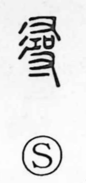

尋

Uncategorized
Kun: tazuneru, hiro | On: jin
to inquire ・ to ask ・ to investigate ・ fathom (span)
Explanation
尋 is a compound of 左 and 右 arranged above and below. 左 depicts the left hand holding a ritual instrument used in cursing rites, while 右 shows the right hand grasping a sai, a covenant coffer into which written prayers to the deities are placed. Together they portray a ritual act of seeking the gods—praying and dancing while asking after their presence. From this image the sense ‘to inquire, to ask’ arose and later broadened to ‘to investigate, to probe.’ The character also came to mean hiro, a fathom: the span from the outstretched right hand to the left, traditionally reckoned as about 118 centimeters.